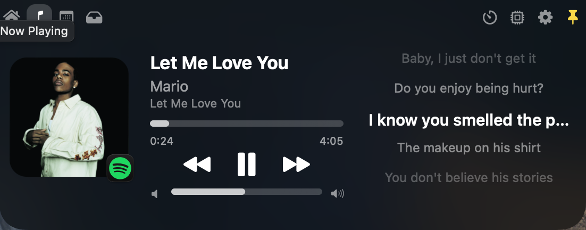

Make the notch actually useful.
Hover the notch and it opens into music with synced lyrics, your calendar, quick controls, a file shelf and more. Nothing leaves your Mac.
Free and open source. Needs macOS 13 or later and a MacBook with a notch.

The notch shows what's playing. Hover over it to open it (or tap it on a phone)
What's inside
Music with synced lyrics
Works with Spotify and Apple Music. Lyrics follow the singer. For songs with no timing, tap along once and it remembers.
Calendar and one-click join
Click a day to see its events. A green Join button opens Zoom, Meet, Teams, Webex, Whereby or Jitsi calls.
Approve coding agents
Allow or deny Claude Code and Codex requests without switching windows. If the notch isn't running, your agent asks you as usual.
A shelf for files
Drag files onto the notch, pick the ones you want and AirDrop them from there.
Volume, sound output and more
Volume, dark mode, Wi-Fi, keep awake and Focus in one place. Swipe to change tabs or songs.
AirPods, timers and battery
See when AirPods connect and their battery, get a chime when a timer ends, and see battery time left.
Install in a minute
The easiest way: paste this into Terminal. It downloads the .dmg and installs the app for you.
brew install --cask t27124949-cell/notch-island/notch-island
Or install it by hand
- Download NotchIsland.dmg from the latest release (a .zip is there too) and open it.
- Drag NotchIsland.app into your Applications folder.
- Open it. If macOS blocks it, go to System Settings → Privacy & Security and click Open Anyway.
- Move your pointer to the notch. In Settings, turn on Open at login.
Free, and made by one person
Notch Island is free and open source under the MIT licence. If it saves you time, you can help keep it going.
Who made it
Built by Tony. I build Mac apps and digital tools. Questions, feedback or work: call or WhatsApp +233 54 904 7027.
Questions
Why does macOS say it can't verify the app?
The app isn't signed with a paid Apple Developer ID yet, so macOS asks you to confirm the first time. Use Open Anyway as shown above. The full source code is on GitHub for anyone to check.
Does it send my data anywhere?
No account and no tracking. The only network requests are the weather for the city you type, lyrics lookups (artist, title and length only) and the update check.
What permissions does it ask for?
Calendar (for the Calendar tab), control of Music or Spotify (for Now Playing) and Bluetooth (for AirPods alerts). All are optional.
Why does the menu bar drop down when I touch the top of the screen?
That's macOS's auto-hide menu bar. Change it in System Settings → Control Center → "Automatically hide and show the menu bar".
Will it work on a Mac without a notch?
It's built for notched MacBooks. On other Macs it sits at the top centre of the screen.